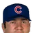
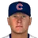
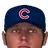
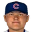

Major League Baseball · Depth chart & lineups
Chicago Cubs
← Team page · Payroll · Transactions
Based on games played and started through May 13, 2002. The OOTP export has no saved depth chart or lineup card, so this is derived from real usage. Lineups and depth chart list only players on the active roster now (26 players).
Most common lineups
For each batting-order spot, the active player who started there most often against that kind of starter (each player used once). Starts in spot = games he started in that spot out of the games against that hand. AVG/OBP/SLG: his season line with this club.
vs. right-handed starters 36 games
| # | Player | Pos | Starts in spot | AVG | OBP | SLG |
|---|---|---|---|---|---|---|
| 1 | CF | 32 of 36 | .282 | .352 | .455 | |
| 2 | LF | 32 of 36 | .265 | .376 | .364 | |
| 3 | 1B | 32 of 36 | .318 | .424 | .534 | |
| 4 | RF | 31 of 36 | .238 | .351 | .449 | |
| 5 | SS | 26 of 36 | .254 | .327 | .338 | |
| 6 | Orlando Palmeiro | DH | 24 of 36 | .260 | .351 | .356 |
| 7 |  Miguel Cairo | 2B | 22 of 36 | .314 | .360 | .371 |
| 8 | 3B | 22 of 36 | .237 | .311 | .430 | |
| 9 | C | 21 of 36 | .212 | .262 | .280 |
vs. left-handed starters 5 games
| # | Player | Pos | Starts in spot | AVG | OBP | SLG |
|---|---|---|---|---|---|---|
| 1 | CF | 5 of 5 | .282 | .352 | .455 | |
| 2 | 3B | 5 of 5 | .265 | .376 | .364 | |
| 3 | 1B | 5 of 5 | .318 | .424 | .534 | |
| 4 | RF | 3 of 5 | .238 | .351 | .449 | |
| 5 | SS | 2 of 5 | .254 | .327 | .338 | |
| 6 | Orlando Palmeiro | DH | 3 of 5 | .260 | .351 | .356 |
| 7 | Miguel Cairo | 2B | 3 of 5 | .314 | .360 | .371 |
| 8 | C | 3 of 5 | .212 | .262 | .280 | |
| 9 |  Brant Brown | LF | 3 of 5 | .218 | .224 | .364 |
Depth chart games started by position through May 13
| Pos | Role | Player | GS at pos | G | AVG | OBP | SLG | HR |
|---|---|---|---|---|---|---|---|---|
| C | Starter | 33 | 33 | .212 | .262 | .280 | 1 | |
| Backup 1 | Mike Rose | 8 | 9 | .303 | .343 | .394 | 0 | |
| Backup 2 | Michel Hernandez | 0 | 6 | .000 | .000 | .000 | 0 | |
| 1B | Starter | 37 | 40 | .318 | .424 | .534 | 7 | |
| Backup 1 | Jarrod Patterson | 4 | 16 | .205 | .294 | .341 | 0 | |
| Backup 2 | Mike Rose | 0 | 9 | .303 | .343 | .394 | 0 | |
| 2B | Starter | Miguel Cairo | 35 | 37 | .314 | .360 | .371 | 0 |
| Backup 1 | 3 | 37 | .265 | .376 | .364 | 2 | ||
| Backup 2 | Jarrod Patterson | 3 | 16 | .205 | .294 | .341 | 0 | |
| 3B | Starter | 38 | 38 | .237 | .311 | .430 | 6 | |
| Backup 1 | 2 | 37 | .265 | .376 | .364 | 2 | ||
| Backup 2 | Miguel Cairo | 1 | 37 | .314 | .360 | .371 | 0 | |
| Backup 3 | Jarrod Patterson | 0 | 16 | .205 | .294 | .341 | 0 | |
| SS | Starter | 37 | 37 | .254 | .327 | .338 | 1 | |
| Backup 1 | 4 | 37 | .265 | .376 | .364 | 2 | ||
| LF | Starter | 28 | 37 | .265 | .376 | .364 | 2 | |
| Backup 1 | Brant Brown | 10 | 16 | .218 | .224 | .364 | 1 | |
| Backup 2 | Orlando Palmeiro | 3 | 40 | .260 | .351 | .356 | 1 | |
| Backup 3 | Jarrod Patterson | 0 | 16 | .205 | .294 | .341 | 0 | |
| CF | Starter | 37 | 39 | .282 | .352 | .455 | 5 | |
| Backup 1 | Orlando Palmeiro | 3 | 40 | .260 | .351 | .356 | 1 | |
| Backup 2 | Brant Brown | 1 | 16 | .218 | .224 | .364 | 1 | |
| Backup 3 | 0 | 37 | .265 | .376 | .364 | 2 | ||
| RF | Starter | 38 | 40 | .238 | .351 | .449 | 9 | |
| Backup 1 | Todd Linden | 3 | 13 | .250 | .333 | .500 | 1 | |
| DH | Starter | Orlando Palmeiro | 34 | 40 | .260 | .351 | .356 | 1 |
| Backup 1 | Jarrod Patterson | 4 | 16 | .205 | .294 | .341 | 0 | |
| Backup 2 | Brant Brown | 3 | 16 | .218 | .224 | .364 | 1 |
Rotation OOTP projected starters (projected_starting_pitchers.csv)
| # | Pitcher | Active | GS | W-L | IP | ERA | WHIP | K |
|---|---|---|---|---|---|---|---|---|
| 1 | Darrell May | Yes | 7 | 2-1 | 40.1 | 5.36 | 1.44 | 24 |
| 2 | Yes | 9 | 2-5 | 63.0 | 2.71 | 0.95 | 41 | |
| 3 | Mike Thurman | Yes | 8 | 3-3 | 46.2 | 5.40 | 1.44 | 31 |
| 4 | Mike Fyhrie | Yes | 9 | 3-2 | 54.1 | 4.47 | 1.51 | 44 |
| 5 | Brett Myers | Yes | 8 | 4-3 | 44.0 | 4.30 | 1.39 | 28 |
Bullpen roles from usage: closer = most saves, setup = most holds, long relief = most innings per outing (1.1+ IP)
| Role | Pitcher | Throws | G | SV | HLD | IP | IP/G | ERA | K |
|---|---|---|---|---|---|---|---|---|---|
| Closer | LHP | 16 | 6 | 0 | 15.0 | 0.9 | 4.80 | 18 | |
| Setup | Obed Vega | RHP | 17 | 1 | 5 | 22.0 | 1.3 | 4.50 | 18 |
| Setup |  Brandon Kolb | RHP | 15 | 2 | 5 | 16.0 | 1.1 | 1.69 | 19 |
| Long relief |  Andy Pratt | LHP | 8 | 1 | 0 | 17.0 | 2.1 | 0.00 | 16 |
| Long relief | Sergio Atondo | RHP | 6 | 0 | 0 | 12.0 | 2.0 | 6.00 | 5 |
| Middle relief | RHP | 13 | 1 | 0 | 20.1 | 1.6 | 1.33 | 19 | |
| Middle relief | Tim Worrell | RHP | 13 | 1 | 0 | 19.1 | 1.5 | 2.33 | 14 |
Bench active position players outside the regular lineups
| Player | Pos | G | PA | AVG | OBP | SLG |
|---|---|---|---|---|---|---|
| Jarrod Patterson | LF | 16 | 51 | .205 | .294 | .341 |
| Mike Rose | 1B | 9 | 35 | .303 | .343 | .394 |
| Todd Linden | RF | 13 | 24 | .250 | .333 | .500 |
| Michel Hernandez | C | 6 | 1 | .000 | .000 | .000 |
Injured list
Nobody on the injured list.